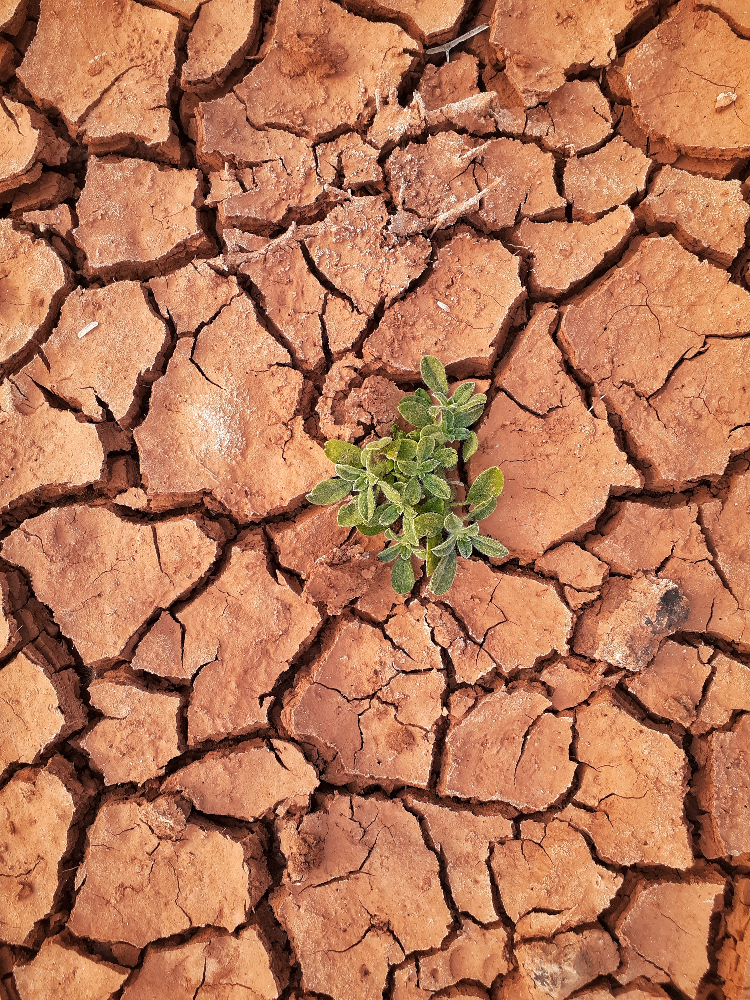
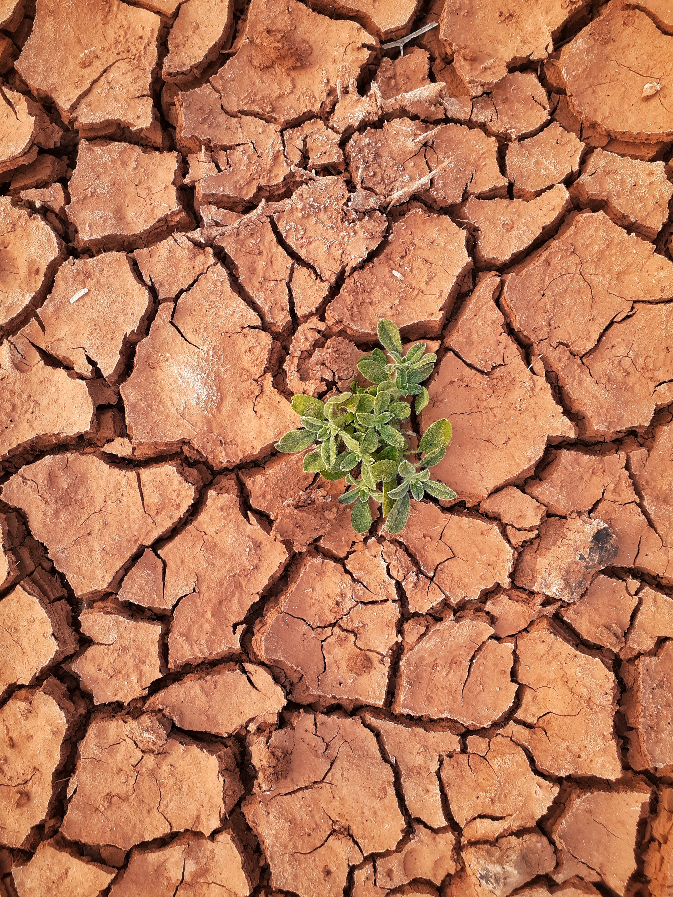

Эрозия почвы в Актобинской области и пути её решения
Инновационная технология мониторинга эрозии почвы на посевных угодиях Актюбинской области E-monitoringn
Эрозия почвы является формой ее деградации. Она определяется как разрушение верхнего слоя земли под влиянием антропогенных и природных факторов. Это процесс, который удаляет верхний слой поля вместе с питательными веществами, а, следовательно, пагубно влияет на плодородие сельскохозяйственных угодий.

Что Такое Эрозия Почвы?
Термин “эрозия почв” охватывает широкий спектр физических и химических воздействий, таких как удаление растворимых веществ, химические изменения, разрушения из-за мороза или быстрые изменения температуры, стирание под действием ветра, заряженного пылью.
Более того, вследствие постоянного роста плотности населения люди вносят значительный вклад в возникновение эрозии из-за обработки полей, чрезмерного обезлесения, а также таких промышленных операций, которые неизбежно влияют на урожайность, например, строительство дорог.

Эрозия Почвы И Ее Причины
ТОпределение причин эрозии поможет нам объяснить, что такое эрозия почвы и ее виды. Можно выделить естественную эрозию почв на полях и ускоренную. Эти два типа значительно отличаются скоростью протекания. Естественная эрозия почв отмечается длинным процессом и может длиться от двух до семи тысячелетий. Антропогенные факторы, в частности нерациональная сельскохозяйственная деятельность человека, значительно ускоряют процесс деградации до 10-30 лет. Основными факторами здесь является неправильная работа с полями, чрезмерные удобрения, бесконтрольный выпас скота, осушение болот, некорректная обработка и орошение угодий.
Более того, вследствие постоянного роста плотности населения люди вносят значительный вклад в возникновение эрозии из-за обработки полей, чрезмерного обезлесения, а также таких промышленных операций, которые неизбежно влияют на урожайность, например, строительство дорог.
 

Естественные (Природные) Причины
Разные типы грунтов подвергается физическим, химическим и биологическим изменениям в зависимости от фактора, вызывающего деградацию. Ключевыми элементами, которые ускоряют деградацию, являются следующие: вода, ветер, снег и движение льда.
- Ветровая эрозия почвы возникает тогда, когда порывы ветра поднимают мелкие частицы с поверхности поля и обнажают его. Толщина снимаемого слоя с поверхности грунта и скорость эрозии зависит от силы ветра. Очень сильные пыльные бури могут отнести слой земли за много километров и превратить плодородное угодье в пустыню.
- Водная эрозия почвы вызвана осадками, которые формируют водные потоки и имеют свойство смывать частички земли. Промоины могут создаваться очень быстро. Сначала в результате осадков формируется небольшая полынья с водой, но впоследствии она может достичь размеров карьера.
- Снежная эрозия почв связана с интенсивным таянием снежного покрова. Это приводит к избыточного увлажнения и разрыхления верхнего слоя почвы. Как результат – питательные органические вещества вымываются быстрее, что снижает плодородие.
.jpg)